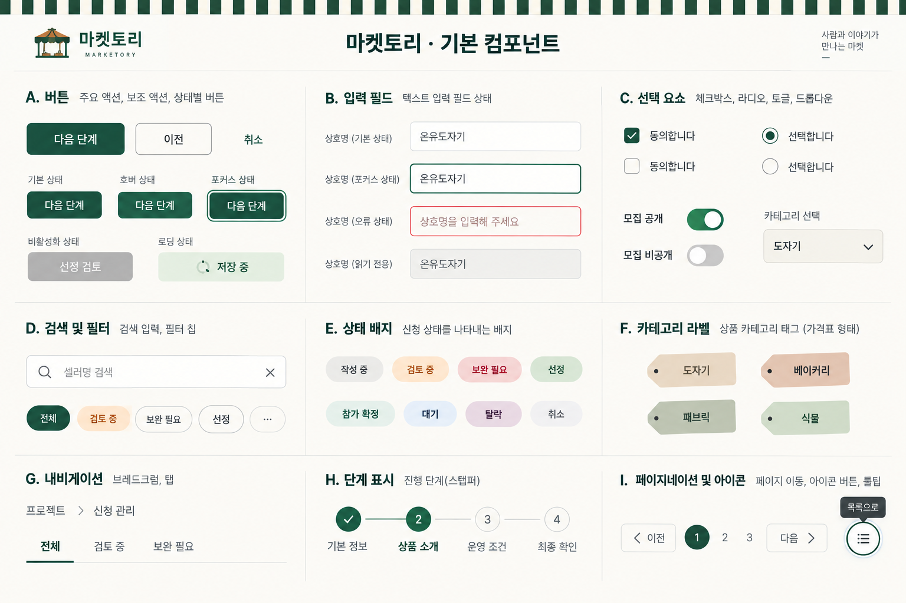
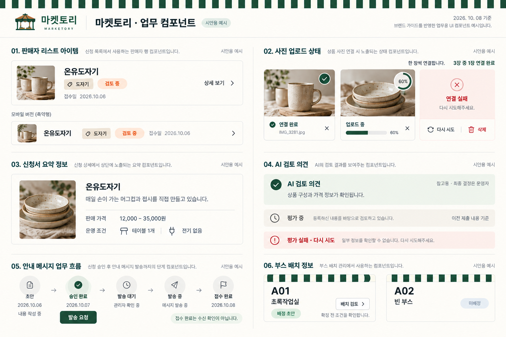
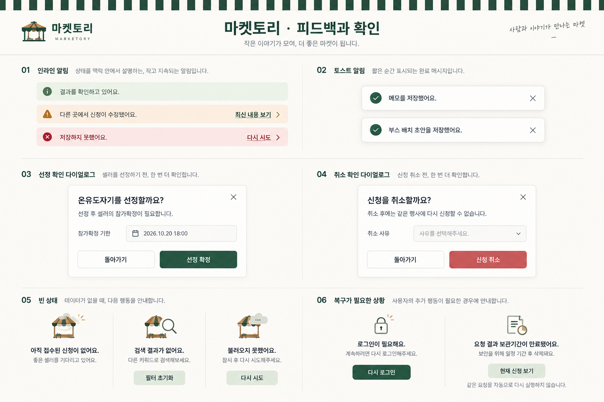

마켓토리의 작은 구성 요소들
선택한 차양 컨셉을 실제 Pretendard와 정확한 색상으로 살펴보세요. 아래 버튼과 확인창은 상태를 비교하는 견본이며 업무를 실행하지 않습니다.
색상과 글꼴
딥그린
#244B3D크림
#FCFAF5세이지 표면
#E7EFE8살구 표면
#FCEAD7Pretendard Variable · 상품에 담긴 정성과 셀러의 이야기를 살펴봅니다.
12,000–35,000원 · 2026.10.08 · 128건
버튼과 입력
행동의 우선순위
busy에서도 버튼의 강조와 크기를 유지합니다. 비활성 상태와 처리 중 상태는 다릅니다.
표시할 상호명을 입력해 주세요.
상호명을 입력해 주세요.
이 견본은 OS 팝업을 사용합니다. 제품용 커스텀 Select는 별도 구현합니다.
업무 요소
신청 상태
작성 중접수 완료보완 필요검토 중선정대기탈락참가 확정취소
상품 카테고리
도자기베이커리패브릭식물
카테고리 태그는 정적 분류입니다. 승인 상태나 필터 버튼을 뜻하지 않습니다.
- 기본 정보
완료 - 상품 소개
현재 단계 - 운영 조건
- 최종 확인
| 셀러 | 카테고리 | 상태 | 접수일 |
|---|---|---|---|
| 온유도자기 | 도자기 | 검토 중 | 2026.10.06 |
AI 검토 의견
참고용 · 최종 결정은 운영자상품 구성과 가격 정보가 확인됩니다.
시안용 예시 · 실제 평가 결과가 아닙니다.피드백과 확인
요청 결과를 확인하고 있어요.
동일 요청의 결과를 확인합니다.다른 곳에서 신청이 수정됐어요.
입력한 내용을 보존하고 최신 내용을 확인합니다.저장하지 못했어요.
입력 내용은 유지됩니다. 연결을 확인한 후 다시 시도해 주세요.요청 결과 보관기간이 만료됐어요.
현재 신청 상태를 확인해 주세요. 자동으로 다시 실행하지 않습니다.선정 확인창의 내용 예시 · 실제 모달이 아님
온유도자기를 선정할까요?
선정 후 셀러의 참가확정이 필요합니다.
한국 표준시 기준
이미지 시안 보드
분위기와 구성 참고용입니다. 이미지 안 문구·글꼴·색상보다 규칙문서와 위의 실제 토큰 견본을 우선합니다.


